Vibrations and normal modes
Vibrations and oscillations are very common phenomena in nature. This is due to the tendency of any system to return to equilibrium when a perturbation is applied. Any oscillating system has a number of preferred ways in which it "likes" to vibrate, these special types of vibrations are called the normal modes of the system, and are characterized by a collective motion with a single frequency and constant phase between the different parts of the system. The number of such modes depends on the number of degrees of freedom in the system and can range from one, in the simplest system, to infinite in the limit of continuum. The importance of these special vibrational modes lies in the fact that any possible vibration pattern of the system can be decomposed into a linear combination of these normal modes (similar to a Fourier decomposition). The fundamental modes are essentially the eigenfunctions of the underlying differential equation describing the dynamics of the system. The special properties of these functions and especially the completeness of the set of solution, in the sense that any function on the domain can be written as a linear superposition of these modes, is known in Mathematics as the Sturm-Liouville Theorem. The simplest and yet most common system in all of physics is undoubtedly the oscillating mass on a spring. It's motion is described by Newton's Law: \begin{equation} \ddot x(t)=-\omega^2x(t) \end{equation} Where $\omega^2=\sqrt{\frac{k}{m}}$, with $m$ the mass of the object, and $k$ the spring constant. $\omega$ has units of $sec^{-1}$ or frequency. The solution to this equation is: $x(t)=Acos(\omega t)+Bsin(\omega t)$, describing an oscillatory motion with frequency $\omega$. The constants $A,B$ are determined from the initial conditions $x(0),\dot x(0)$. As described, this system having a single degree of freedom (the position of the mass) has a single normal mode or natural frequency, with the Sine and Cosine as the eigenfunctions of the second time derivative operator, in this case. We next move to a slightly more complicated system composed of two masses ($m_1=m_2=m$ for simplicity) connected by springs which are connected to the walls at both ends and all having a spring constant k. Here we have two degrees, the two positions of the masses, and in this case we already can imagine various types of vibrational motions of the two coupled masses. We have two equations of motions for the two degrees of freedom: \begin{equation} \ddot x_1 = -\omega^2_0 x_1-\omega^2_0 (x_1-x_2) \\ \ddot x_2 = -\omega^2_0 x_2+\omega^2_0(x_1-x_2) \end{equation} One way to solve these equations which gives important insight is by taking the sum and difference of the two equations giving: \begin{equation} \ddot x_1 + \ddot x_2 = -\omega^2_0 (x_1+x_2) \\ \ddot x_1 - \ddot x_2 = -3\omega^2_0 (x_1-x_2) \end{equation} we see that the new variables $X(t)=x_1+x_2$ and $Y(t)=x_1-x_2$ behave as simple harmonic oscilator which we saw before with frequencies $\omega_0$ and $\sqrt{3}\omega_0$, and their motion is given by: \begin{equation} X(t) = a_1 cos(\omega_0 t)+a_2 sin(\omega_0 t) \\ Y(t) = b_1 cos(\sqrt{3}\omega_0 t)+b_2 sin(\sqrt{3}\omega_0 t) \end{equation} These are the normal modes of the 2 coupled springs system, and the variables are called the normal coordinates. We saw that the individual displacements of the masses are given in terms of the normal modes by: $x_1=\frac{1}{2}(X+Y)$ and $x_2=\frac{1}{2}(X-Y)$. \begin{equation} x_1(t) = A_1 cos(\omega_0 t)+A_2 sin(\sqrt{3}\omega_0 t) \\ x_2(t) = A_1 cos(\omega_0 t)-A_2 sin(\sqrt{3}\omega_0 t) \end{equation} We can therefore write any motion of the two masses in terms of these fundamental modes. To visualize the first mode in terms of the individual masses, we see that if we set $A_2=0$ removing the second mode we get $x_1(t)=x_2(t)=A_1 cos(\omega_0 t)$ implying that both masses move exactly in the same manner with the natural frequency. On the other hand if we set $A_1=0$ we get $x_1=-x_2=A_2 sin(\sqrt{3}\omega_0 t)$ implying that the masses move with the higher frequency but in opposite directions. Below are the two fundamental modes, in which both masses move with the same frequency and constant relative phase.

We can continue to 3,4,.. masses attached by springs and eventually we will reach the limit of continuum where the number of masses (atoms) is essentially $N\rightarrow \infty$ or %the spacings become $\Delta x\rightarrow 0$. The underlying equation of motion describing a vibrating continuous system is the wave equation: \begin{equation} \frac{\partial^2 u}{\partial t^2} = c^2\Delta u \end{equation} Where $u$ is the amplitude of some quantity and c is the speed of the traveling waves, which depend on the type of waves and the domain in which the waves propagate. A Vibrating system in a given domain contain waves subject to boundary conditions which result in standing waves. We start by the simplest system in 1D of a vibrating string fixed at both ends, as is the case for strings in a violin, guitar and a piano. The wave equation reduces in this case reduces to: \begin{equation} \frac{\partial^2 u(x,t)}{\partial t^2}=c^2\frac{\partial^2 u(x,t)}{\partial x^2} \end{equation} We solve this equation on $0\leq x\leq a$ and with the boundary conditions $u(0,t)=0, u(0,a)=0$. We assume a solution of seperated variables $u(x,t)=X(x)T(t)$, plugging this into () and dividing by $u$ gives: \begin{equation} \frac{X''(x)}{X(x)}=c^2\frac{\ddot T(t)}{T(t)} \end{equation} Since both sides of the equation depend on different independent variables, they both must equal a constant $L$. Which allows to solve for $X,T$. Since the solution for X must be bounded and is fixed at both ends (so a decaying exponential gives a trivial solution) we must have $L=-\lambda^2\leq 0$. \begin{equation} X(x)=A cos(\lambda x) + B sin(\lambda x) \end{equation} Applying the boundary conditions, $X(0)=0$ gives $A=0$ and $X(a)=0$ gives $\lambda_n=\frac{\pi n}{a}$ with $n=1,2,3,...$, therefore the boundary condition discretized the allowed values of $\lambda$, we therefore can write \begin{equation} X_n(x)=A_{n}\sin(\lambda_n x) \end{equation} We then get for $T(t)$: \begin{equation} T_n(t)=C_n cos(\frac{\lambda_n}{c} t) + B_n sin(\frac{\lambda_n}{c} t) \end{equation} Therefore the most general solution to the problem is: \begin{equation} u(x,t)=\sum_{n=1}^{\infty} \sin(\frac{\pi n}{a} x) (A_n cos(\omega_n t) + B_n sin(\omega_n t) ) \end{equation} Where $\omega_n=\frac{\pi n}{ca}$ are the fundamental frequencies of the vibrating string. The constants A and B are determined from the initial conditions $u(x,0),\dot u(x,0)$. Therefore we've seen that any vibration of the string is given by A linear combination of the fundamental modes of the string. Below are the first 3 modes of the vibrating string, note the increased number of nodes (fixed points) and the increased frequency for each successive mode.


As an example, I consider a specific initial condition and show how the different modes build up the vibrating string shape and its evolution with time. This will show the important property of the normal modes which allows the determination of the constant coefficients. I consider a string starting with a shape $f(x)$ of a triangle (pulled string). The initial conditions are $u(x,0)=x$ for $0\le x \le 0.5$ and $u(x,0)=1-x$ for $0.5\le x\le 1$, and $\dot u(x,0)=0$. From the condition on the first time derivative we immediately have $B_n=0$. The second condition implies: \begin{equation} f(x)=\sum_{n=1}^{\infty} A_n\sin(\pi n x) cos(\omega_n t) \end{equation} To obtain $A_n$ we multiply both sides by $\sin(\pi m x)$ and integrate on $[0,1]$. Here we use the property of the eigenfunctions or the normal modes which are guaranteed to be orthogonal in the sense of the dot product defined on our domain to be zero between different modes: $\int_0^1 \sin(\pi n x) \sin(\pi m x) dx = \delta_{mn}\frac{1}{2}$. Therefore we obtain $A_n=\int_0^1 f(x)\sin(\pi n x)$. This gives the amplitude (or power) of each mode and frequency in the overall vibration of the string. Below I show the animation which starts with the string in its initial condition and its evolution as the sum of infinite (or a 20 in the animation, which is sufficient since the amplitude of successive modes turns out to scale as $1/n^2$).

Next we move to 2D and consider the interesting case of a vibrating circular membrane (or a drum) with zero boundary conditions. In this case the domain is an elastic membrane, and $u$ describes the z coordinate (or height) of the membrane at a given position $(r,\theta)$. The problem is more easily described using cylindrical, we therefore rewrite the wave equation in these coordinates: \begin{equation} \frac{\partial^2 u}{\partial t^2} = c^2(\frac{\partial^2 u}{\partial r^2}+\frac{1}{r}\frac{\partial u}{\partial r}+\frac{1}{r^2}\frac{\partial^2 u}{\partial \theta^2}) \end{equation} on $r<1$ and $u(r,\theta,t)=0$ for $r=1$. Next we find a general solution to the wave equation as described. A common method is to assume a solution of separated variables $u(r,\theta,t)=R(r)\Theta(\theta)T(t)$. Plugging this into (2) and dividing by $u$ we get: \begin{equation} \frac{\ddot T(t)}{c^2 T(t)}=\frac{R''(r)}{R(r)}+\frac{R'(r)}{rR(r)}+\frac{\Theta''(\theta)}{r^2 \Theta(\theta)} \end{equation} Since both sides of the equation depend on different independent variables, they both must equal a constant $K$. We therefore get two equations. The first of which is an equation for $T(t)$: \begin{equation} \ddot T(t) = Kc^2T(t) \end{equation} Which can be immediately solved, noting that we expect oscillatory solutions, and therefore have the physical requirement that $K=-\lambda^2$: \begin{equation} T(t) =Acos(\lambda t)+Bsin(\lambda t) \end{equation} The second equation is given by: \begin{equation} \frac{R''(r)}{R(r)}+\frac{R'(r)}{rR(r)}+\frac{\Theta''(\theta)}{r^2 \Theta(\theta)}=-\lambda^2 \end{equation} We separate the radial and azimuthal dependencies by multiplying by $r^2$, from which we again get an equation with two sides depending on different independent variables which forces both sides to be a constant $L$. The resulting equation for $\Theta$ is \[ -\frac{\Theta''(\theta)}{\Theta(\theta)}=L \] which has the immediate solution with $L>0$, noting that $\Theta$ must be periodic with period $2\pi$ we get, \begin{equation} \Theta_m(\theta) = C_m \cos (m\theta)+D_m\sin(m\theta) \end{equation} with, $L=m^2$ and $m\in\{0,1,...\}$. Therefore the condition of periodicity set by the geometry of the problem forced the quantization of $L$ and $m$. Finally, The radial equation is given by: \begin{equation} r^2R''(r)+rR'(r)+(\lambda^2r^2-m^2)R(r)=0 \end{equation} We make the change of variables $s=\lambda r$ which will cast this equation into a canonical form. With this change we have $R(r)=R(s/\lambda)=f(s)$, $R''(r)=\lambda^2f''(s)$ and $R'(r)=\lambda f'(s)$. Plugging this into the equation gives: \begin{equation} s^2f''(s)+sf'(s)+(s^2-m^2)f(s)=0 \end{equation} This has the canonical form of the Bessel equation of order m (integer), which has the general solution in terms of the Bessel functions of order m of the first and second kind: \begin{equation} f(s)=aJ_m(s)+bY_m(s) \end{equation} However, the Bessel function of the second kind has the property $\lim_{x \to 0^+}Y_m(s)=-\infty$ and is thus not a physical solution. Returning to the original variables we get the solution for the radial equation: \begin{equation} R(r)=EJ_m(\lambda r) \end{equation} We recall now the boundary condition $u(r=1)=0$, which requires $J_m(\lambda)=0$, therefore we see that the boundary condition forces $\lambda$ to be discrete with allowed values corresponding to the zeros of the Bessel function of order m. We can therefore write $\lambda=\lambda_{mn}$ where $m=0,1,..$ indicating the order of the Bessel function, and $n=1,2,..$ indicating the zero of $J_m(r)$. Below I show the first 5 Bessel functions of the first kind (from purple to red) and their various zeros.

Using the the solutions (5), (7), (11) and the discretization imposed by the boundary conditions, we get the most general solution for the wave equation in (2): \begin{equation} u(r,\theta,t)=\sum_{m=0}^{\infty}\sum_{n=1}^{\infty}(C_{mn} \cos (m\theta)+D_{mn}\sin(m\theta))J_m(\lambda_{mn} r)(A_{mn} \cos (\lambda_{mn}t)+B_{mn}\sin(\lambda_{mn}t)) \end{equation} The constants A,B,C,D are not always all necessary (depending on the initial conditions), in particular when the initial conditions have no dependence on $\theta$ the solutions will not have a dependence on $\theta$ and we must have only $m=0$. The importance of these functions in the series is in their orthogonality relations. For $m\ne n$ cosines and sines are orthogonal to each other in the sense of the dot product $\int cos(m\theta)sin(n\theta)=0$ and $\int J_m(r)J_n(r)=0$. This allows to determine the constant given initial conditions $u(r,\theta,0)=f(r,\theta)$ and $\dot u(r,\theta,0)=g(r,\theta)$ using the "Fourier trick" which involves multiplying both sides of the equation by orthogonal component and integrating, which will isolate the constant coefficients. In the table below I show 15 of the normal modes for the circular vibrating drum, which are one of the main reasons I decided to write this summary in the first place.
| $m=0,n=1$ 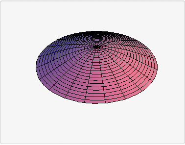 |
$m=0,n=2$ 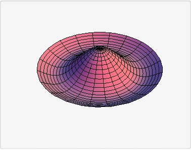 |
$m=0,n=3$ 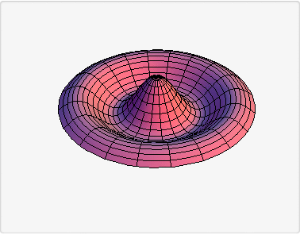 |
| $m=1,n=1$ 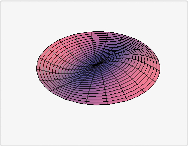 |
$m=1,n=2$ 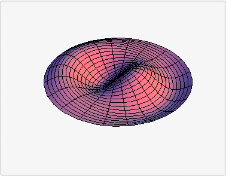 |
$m=1,n=3$ 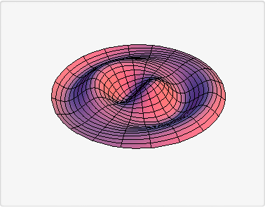 |
| $m=2,n=1$ 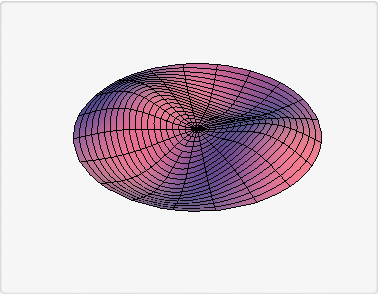 |
$m=2,n=2$ 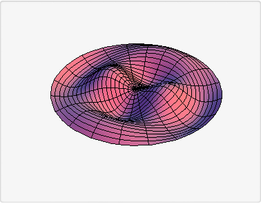 |
$m=2,n=3$ 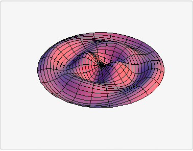 |
| $m=3,n=1$ 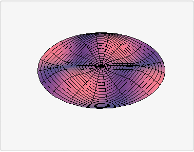 |
$m=3,n=2$ 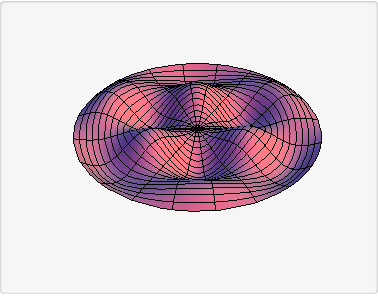 |
$m=3,n=3$ 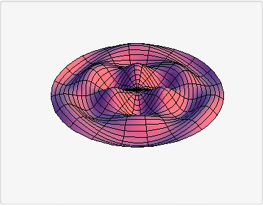 |
| $m=4,n=1$ 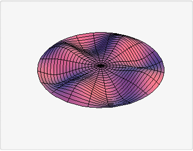 |
$m=4,n=2$ 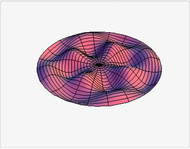 |
$m=4,n=3$ 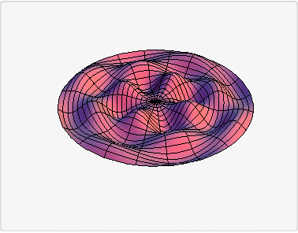 |